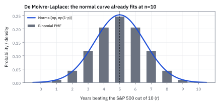

1.5 The Binomial Distribution
Binomial นับว่าจากการทดลอง $n$ ครั้งที่เป็นอิสระและมีโอกาสสำเร็จ $p$ เท่ากันทุกครั้ง จะสำเร็จกี่ครั้ง
ผู้จัดการกองทุนคนหนึ่งทำผลตอบแทนชนะดัชนี S&P 500 ได้ 8 ปีจาก 10 ปี ทีมคัดเลือกกองทุนถามว่า ถ้าเขาไม่มีฝีมือเลย คือแต่ละปีมีโอกาสชนะตลาดครึ่งหนึ่งเหมือนโยนเหรียญ และผลแต่ละปีไม่เกี่ยวกัน ผลงานดีอย่างน้อยเท่านี้จะเกิดขึ้นได้บ่อยแค่ไหน แล้วถ้าเขาเป็นคนที่ผลงานดีที่สุดจาก 100 คนที่ทีมดูมา คำตอบเปลี่ยนไหม
ลองตอบก่อนเปิดเฉลย
ลำดับชนะแพ้สิบปีมี $2^{10}=1{,}024$ แบบที่มีโอกาสเท่ากัน แบบที่ชนะ 8, 9 และ 10 ปีมี 45, 10 และ 1 แบบ รวม 56 แบบ โอกาสจึงเป็น $56/1{,}024\approx5.47\%$ ไม่บ่อย แต่ก็ไม่ได้หายาก ส่วนคำถามที่สองเปลี่ยนคำตอบมาก: ในผู้จัดการไม่มีฝีมือ 100 คน โอกาสที่จะมีอย่างน้อยหนึ่งคนชนะตั้งแต่ 8 ปีคือ $1-(1-0.0547)^{100}\approx99.6\%$ แทบแน่นอน คนที่ดีที่สุดจาก 100 คนจึงมักมีผลงาน 9 ปีจาก 10 แม้ไม่มีใครมีฝีมือเลย
ภาพรวมก่อนลงสูตร
หลายคำถามในการเงินคือการนับจำนวนครั้งที่ “สำเร็จ” จากการทดลองจำนวนที่กำหนด: ชนะตลาดกี่ปีจากสิบปี มีลูกหนี้ผิดนัดกี่รายจาก 200 ราย หรือมีวันที่ขาดทุนเกิน VaR กี่วันจาก 250 วัน ถ้าทุกครั้งมีโอกาสสำเร็จ $p$ เท่ากัน และผลแต่ละครั้งไม่เกี่ยวกัน จำนวนครั้งที่สำเร็จ $X$ มี distribution แบบเดียวกันเสมอ เรียกว่า binomial เขียนว่า $X\sim\mathrm{Bin}(n,p)$
สูตรของมันสร้างจากสองชิ้น: โอกาสของลำดับชนะแพ้หนึ่งลำดับ และจำนวนลำดับที่ให้จำนวนชนะเท่ากัน ชิ้นแรกมาจากการคูณภายใต้ independence ชิ้นที่สองมาจากการนับวิธีเลือกตำแหน่ง ค่าเฉลี่ยและ variance ได้จากการมอง $X$ เป็นผลรวมของตัวแปร 0/1 ด้วยเครื่องมือจากหน้า variance
หน้านี้จะสร้างสูตรจากเหรียญสามครั้ง ใช้กับผู้จัดการกองทุน หาค่าเฉลี่ยและ variance ตอบคำถามว่าคนที่ดีที่สุดจากหลายคนควรดีแค่ไหน แล้วดูว่าการประมาณด้วย normal ใช้ได้แค่ไหน
รูป — จำนวนปีที่ชนะตลาดของผู้จัดการที่ไม่มีฝีมือ
ศัพท์ที่ใช้ในหน้านี้
- Bernoulli trial
- การทดลองหนึ่งครั้งที่ผลมีสองแบบ สำเร็จ (1) หรือไม่สำเร็จ (0) ใช้เป็นชิ้นส่วนพื้นฐานของการนับ
- binomial distribution
- distribution ของจำนวนครั้งที่สำเร็จจาก $n$ ครั้งที่อิสระและมีโอกาส $p$ เท่ากัน ใช้กับผลงานรายปี การผิดนัด และการนับวันที่ขาดทุนเกิน VaR
- combination
- $\binom nr$ จำนวนวิธีเลือก $r$ ตำแหน่งจาก $n$ ตำแหน่งโดยไม่สนลำดับการเลือก ใช้นับลำดับที่ให้จำนวนสำเร็จเท่ากัน
- track record
- ประวัติผลงานย้อนหลังของผู้จัดการหรือกลยุทธ์ ใช้ประเมินฝีมือ แต่ต้องเทียบกับสิ่งที่โชคช่วยเดียวสร้างได้
- multiple testing
- การดูผู้สมัครหรือกลยุทธ์หลายตัวแล้วเลือกตัวที่ดีที่สุด ทำให้ผลงานเด่นเกิดขึ้นได้ง่ายแม้ไม่มีใครเก่งจริง
- survivorship bias
- การเห็นเฉพาะกองทุนที่ยังอยู่ ซึ่งมักเป็นกองที่ผลงานดี ทำให้ภาพรวมดูดีเกินจริง
สัญลักษณ์ ความหมาย และหน่วย
| สัญลักษณ์ | ความหมาย | หน่วย |
|---|---|---|
| $n$, $p$ | จำนวนครั้ง, โอกาสสำเร็จต่อครั้ง | ครั้ง, ไม่มีหน่วย |
| $X$, $r$ | จำนวนครั้งที่สำเร็จ (สุ่ม), ค่าที่กำลังถาม | ครั้ง |
| $\binom nr$ | จำนวนวิธีเลือก $r$ ตำแหน่งจาก $n$ | วิธี |
| $B_i$ | 1 ถ้าครั้งที่ $i$ สำเร็จ 0 ถ้าไม่ | ไม่มีหน่วย |
| $M$, $q$ | จำนวนผู้จัดการที่ดู, โอกาสที่หนึ่งคนผ่านเกณฑ์ | คน, ไม่มีหน่วย |
ขั้นที่ 1 — เริ่มจากเหรียญสามครั้ง: ลำดับกับจำนวน
สิบปีมีลำดับมากเกินไปที่จะวาด เราจึงดูกรณีเล็กก่อน โยนเหรียญยุติธรรมสามครั้ง ให้ H คือหัว T คือก้อย ทุกลำดับมีโอกาสเท่ากัน แต่คำถาม “ได้หัวสองครั้ง” ไม่ได้ถามถึงลำดับใดลำดับหนึ่ง
เหตุการณ์ “หัวสองครั้ง” ประกอบด้วยสามลำดับที่ต่างกันแค่ตำแหน่งของก้อย สามลำดับนี้เกิดพร้อมกันไม่ได้ จึงบวกโอกาสได้ นี่คือโครงของ binomial ทั้งหมด: (จำนวนลำดับที่เข้าเงื่อนไข) × (โอกาสของแต่ละลำดับ) งานที่เหลือคือหาสองตัวนี้สำหรับ $n$ และ $p$ ทั่วไป
รูป — ต้นไม้ของเหรียญสามครั้ง
ขั้นที่ 2 — โอกาสของลำดับที่ระบุไว้หนึ่งลำดับ
กลับมาที่ผู้จัดการ ให้ W คือปีที่ชนะตลาด L คือปีที่แพ้ ถ้าผลแต่ละปีเป็นอิสระ โอกาสของลำดับสิบปีที่ระบุตำแหน่งไว้ครบคือผลคูณของโอกาสทีละปี เหมือนการคูณตามกิ่งของต้นไม้
ลำดับที่มีชนะ $r$ ปีมีตัวคูณ $p$ อยู่ $r$ ตัว และตัวคูณ $1-p$ อยู่ $n-r$ ตัว ไม่ว่า W จะอยู่ตำแหน่งไหน ผลคูณจึงเท่ากันทุกลำดับที่มีจำนวน W เท่ากัน ข้อนี้คือเหตุผลที่เรานับลำดับแล้วคูณด้วยโอกาสเดียวได้ ข้อนี้พังทันทีถ้าโอกาสชนะเปลี่ยนไปตามปี
ขั้นที่ 3 — นับลำดับที่ชนะ 8 ปีโดยไม่นับซ้ำ
ชนะ 8 ปีจาก 10 ปีเท่ากับการเลือกว่าสองปีไหนเป็นปีที่แพ้ เลือกได้กี่แบบ ถ้าเลือกทีละปีแบบเรียงลำดับ ปีแรกเลือกได้ 10 แบบ ปีที่สองเลือกได้ 9 แบบ แต่คู่ “ปี 2 กับปี 7” จะถูกนับซ้ำเป็น “ปี 7 กับปี 2” ด้วย
ตัวเศษนับการเลือกแบบเรียงลำดับ ตัวหาร $r!$ ตัดการนับซ้ำ เพราะกลุ่มตำแหน่งชุดเดียวกันถูกเรียงได้ $r!$ แบบ สัญลักษณ์ $r!$ คือ $r(r-1)\cdots1$ และตกลงให้ $0!=1$ เพื่อให้กรณี “เลือกศูนย์ตำแหน่ง” ได้ 1 วิธี คือไม่เลือกอะไรเลย เลือกตำแหน่งชนะ 8 ตำแหน่งหรือเลือกตำแหน่งแพ้ 2 ตำแหน่งเป็นเรื่องเดียวกัน จำนวนจึงเท่ากัน
ขั้นที่ 4 — รวมเป็น binomial PMF แล้วอ่านหาง
เอาสองชิ้นมาคูณกัน ได้โอกาสที่จะชนะพอดี $r$ ปี แล้วตอบคำถามของทีมคัดเลือก ซึ่งถาม “อย่างน้อย 8 ปี” ไม่ใช่ “8 ปีพอดี”
ภายใต้สมมติฐาน “ไม่มีฝีมือ” ผลงานอย่างน้อยเท่านี้เกิดราว 1 ใน 18 คน ถ้ามีกองทุนแบบนี้ 18 กอง คาดว่าจะมีหนึ่งกองที่ดูเก่งแบบนี้ได้โดยบังเอิญ บรรทัดสุดท้ายตรวจว่า PMF รวมได้หนึ่ง: ผลรวมของ $\binom nr p^r(1-p)^{n-r}$ ทุก $r$ คือการกางวงเล็บ $(p+(1-p))^n$ ตาม binomial theorem ซึ่งเป็นที่มาของชื่อ distribution นี้
5.47% คือโอกาสเห็นผลงานแบบนี้ เมื่อสมมติว่าไม่มีฝีมือ ไม่ใช่โอกาสที่ผู้จัดการไม่มีฝีมือ สองข้อนี้ต่างกันเหมือน “โอกาสที่ฝนตกเมื่อมีเมฆ” กับ “โอกาสที่มีเมฆเมื่อฝนตก” การกลับทิศต้องใช้ Bayes' theorem
ขั้นที่ 5 — ค่าเฉลี่ยและ variance จากตัวแปร 0/1
การหาค่าเฉลี่ยด้วย $\sum r\,P(X=r)$ ทำได้แต่ยุ่ง ทางลัดคือมอง $X$ เป็นผลรวมของ indicator รายปี ให้ $B_i=1$ ถ้าปีที่ $i$ ชนะ และ $B_i=0$ ถ้าแพ้ แล้วใช้กฎผลรวมของค่าเฉลี่ยและ variance
$B_i$ มีค่าแค่ 0 กับ 1 ยกกำลังสองแล้วไม่เปลี่ยน $\mathbb E[B_i^2]$ จึงเท่ากับ $p$ แล้วสูตรลัด variance ให้ $p(1-p)$ ค่าเฉลี่ยของผลรวมบวกกันได้เสมอ ส่วน variance บวกกันได้เพราะปีต่าง ๆ เป็นอิสระ covariance จึงเป็นศูนย์ ผู้จัดการไม่มีฝีมือจึงชนะเฉลี่ย 5 ปี และมักห่างจาก 5 ประมาณ 1.6 ปี ผลงาน 8 ปีอยู่ห่างค่าเฉลี่ยราว 1.9 standard deviation
ตัวคูณ $p(1-p)=\tfrac14-(p-\tfrac12)^2$ ไม่เกิน $\tfrac14$ และสูงสุดที่ $p=0.5$ ตามรูปด้านล่าง เมื่อ $p$ ใกล้ 0 หรือ 1 ผลเกือบแน่นอน การกระจายจึงหดลง
รูป — ความแกว่งต่อครั้ง p(1 − p) สูงสุดที่ครึ่งต่อครึ่ง
ขั้นที่ 6 — คนที่ดีที่สุดจาก 100 คนควรดีแค่ไหน
ในความจริง ทีมคัดเลือกไม่ได้ระบุผู้จัดการไว้ก่อนแล้วรอสิบปี แต่ดูประวัติของคนจำนวนมากแล้วเลือกคนที่เด่นที่สุด ให้มีผู้จัดการ $M=100$ คน ไม่มีใครมีฝีมือ และผลของแต่ละคนเป็นอิสระกัน ให้ $q_k$ เป็นโอกาสที่หนึ่งคนชนะอย่างน้อย $k$ ปี ให้ $Y$ เป็นจำนวนปีที่ชนะของคนที่ดีที่สุด และ $N_8$ เป็นจำนวนคนที่ชนะอย่างน้อย 8 ปี คนที่ดีที่สุดชนะอย่างน้อย $k$ ปี ก็ต่อเมื่อไม่ใช่ทุกคนที่ต่ำกว่า $k$
เริ่มจากเหตุการณ์ตรงข้าม: “ทุกคนชนะไม่ถึง $k$ ปี” แต่ละคนมีโอกาส $1-q_k$ และเป็นอิสระกัน จึงคูณได้ $(1-q_k)^{100}$ แล้วลบจากหนึ่ง ผลคือคนที่ดีที่สุดจาก 100 คนมีผลงาน 9 ปีจาก 10 บ่อยที่สุด (56.73%) และมีผลงานครบ 10 ปีถึง 9.31% ทั้งที่ทุกคนกำลังโยนเหรียญ ค่าเฉลี่ยผลงานของคนที่ดีที่สุดอยู่ราว 8.75 ปี
บรรทัดสุดท้ายใช้ indicator จากหน้า expected value: จำนวนคนที่ผ่านเกณฑ์ 8 ปีคือผลรวมของ indicator รายคน คาดว่าจะมีราว 5.5 คนต่อ 100 คน สูตรนี้ไม่ต้องใช้ independence ข้ามคน แต่สูตร $1-(1-q)^M$ ต้องใช้ ถ้าผู้จัดการหลายคนถือหุ้นคล้ายกัน ผลของพวกเขาเกี่ยวกัน และตัวเลขจะเปลี่ยน ปัญหาการเลือกตัวที่ดีที่สุดจากหลายตัวนี้คือ multiple testing
รูป — ผลงานของคนที่เลือกไว้ก่อน กับคนที่ดีที่สุดจาก 100 คน
ขั้นที่ 7 — ประมาณด้วย normal ต้องเลื่อนขอบครึ่งหน่วย
เมื่อ $n$ ใหญ่ การบวก PMF ทีละแท่งเริ่มยุ่ง จึงมักประมาณ binomial ด้วย normal distribution ที่มีค่าเฉลี่ย $np$ และ variance $np(1-p)$ จุดที่ต้องระวังคือ binomial อยู่บนจำนวนเต็ม แท่งที่ 8 ครอบช่วง 7.5 ถึง 8.5 ขอบของ “อย่างน้อย 8” จึงอยู่ที่ 7.5 การเลื่อนขอบนี้เรียกว่า continuity correction ให้ $\Phi$ เป็น CDF ของ standard normal
แถวแรกเลื่อนขอบแล้ว ได้ 5.69% ใกล้คำตอบจริงในแถวสุดท้าย 5.47% แถวกลางไม่เลื่อนขอบ ได้ 2.89% ต่ำไปเกือบครึ่ง เพราะทิ้งครึ่งซ้ายของแท่ง 8 ไปทั้งก้อน กฎหยาบที่ใช้กันคือประมาณได้ดีเมื่อทั้ง $np$ และ $n(1-p)$ ไม่ต่ำกว่าราว 10 ตัวอย่างนี้ได้แค่ 5 และ 5 จึงควรใช้การนับตรงเป็นคำตอบ และใช้ normal แค่ดูภาพรวม
รูป — แท่ง binomial กับระฆัง normal ที่ทาบ

ความสูงของแท่งคือโอกาสของจำนวนเต็มแต่ละค่า ส่วนความสูงของเส้นระฆังคือ density การเทียบโอกาสต้องใช้พื้นที่ใต้ระฆังในช่วงกว้างหนึ่งหน่วยรอบจำนวนเต็ม ไม่ใช่เทียบความสูงสองแบบ หางขวาของระฆังเริ่มที่ 7.5 จึงครอบแท่ง 8 ได้เต็ม
จุดที่พลาดแล้วได้คำตอบผิดโดยไม่รู้ตัว
ใช้ “พอดี” แทน “อย่างน้อย”: $P(X=8)=4.39\%$ ไม่ใช่คำตอบของ “ดีอย่างน้อยเท่านี้” ซึ่งต้องรวม 9 และ 10 ปี ได้ 5.47% ในการประเมินผลงาน คำถามที่ถูกเกือบทุกครั้งคือหาง
อ่านโอกาสของข้อมูลเป็นโอกาสของสมมติฐาน: 5.47% ไม่ได้แปลว่าผู้จัดการมีโอกาสไม่มีฝีมือ 5.47% ลองเทียบกับแบบจำลองที่มีฝีมือพอควร คือชนะปีละ 60%: โอกาสชนะอย่างน้อย 8 ปีเป็น 16.73% สูงกว่า 3.06 เท่า ตัวเลขนี้บอกว่าข้อมูลเข้ากับแบบจำลองไหนมากกว่า แต่จะแปลงเป็นโอกาสว่ามีฝีมือ ต้องรู้ด้วยว่าก่อนดูข้อมูล ผู้จัดการที่มีฝีมือมีสัดส่วนเท่าไร
ลืมว่าคนที่เห็นถูกคัดมาแล้ว: กองทุนที่ปิดตัวไปเพราะผลงานแย่ไม่อยู่ในฐานข้อมูล (survivorship bias) และผู้จัดการที่ถูกส่งมาให้ดูมักเป็นตัวที่เด่นที่สุดจากหลายคน ตามรูปคนที่ดีที่สุดจาก 100 คน ผลงาน 9 ปีจาก 10 จึงไม่ใช่หลักฐานพอ ถ้าไม่รู้ว่าถูกเลือกมาจากกี่คน
เลือกช่วงเวลาหลังเห็นข้อมูล: ถ้าเลือก “สิบปีที่ดีที่สุด” จากประวัติ 20 ปี $n$ ไม่ได้ถูกกำหนดไว้ก่อน หางของ $\mathrm{Bin}(10,0.5)$ จะประเมินโชคต่ำไป เพราะการเลือกช่วงก็คือการค้นหาหลายครั้งอีกแบบหนึ่ง
ใช้ทำอะไรบนโต๊ะจริง
นอกจากการประเมินผู้จัดการ binomial ยังอยู่ในงานประจำอีกหลายที่: จำนวนวันที่ขาดทุนเกิน VaR 99% ใน 250 วันทำการควรเป็น $\mathrm{Bin}(250,0.01)$ ถ้าแบบจำลองถูก คาดว่าเฉลี่ย 2.5 วัน ถ้าเห็น 8 วัน หางของ binomial บอกว่าแบบจำลองน่าจะประเมินความเสี่ยงต่ำไป (VaR backtesting) ส่วนจำนวนลูกหนี้ที่ผิดนัดจากพอร์ต 200 รายที่ผิดนัดอิสระกันด้วยโอกาสเท่ากันก็เป็น binomial ซึ่งหน้า Poisson distributionจะประมาณด้วยสูตรที่ง่ายกว่า
โจทย์ตรวจความเข้าใจ
1. ภายใต้สมมติฐานไม่มีฝีมือ ($p=0.5$) เทียบโอกาสชนะอย่างน้อย 16 จาก 20 ปี และอย่างน้อย 40 จาก 50 ปี กับ 8 จาก 10 ปี ทั้งหมดคือชนะ 80% ทำไมหลักฐานจึงไม่เท่ากัน
เฉลย
ใช้ $P(X\ge k)=\sum_{r=k}^{n}\binom nr 0.5^n$ ได้ 5.47% (10 ปี), 0.59% (20 ปี) และ 0.0012% (50 ปี) สัดส่วนชนะ $X/n$ มี standard deviation $\sqrt{p(1-p)/n}$ ซึ่งหดลงเมื่อ $n$ โต ที่ $n=10$ ได้ 0.158 ที่ $n=50$ ได้ 0.071 ระยะจาก 50% ถึง 80% เท่าเดิมจึงกลายเป็นหลาย standard deviation มากขึ้น ข้อมูลยาวขึ้นทำให้โชคอธิบายผลงานเดียวกันได้ยากขึ้น
2. กลยุทธ์ TSLA มีโอกาสถึงเป้า +2R เท่ากับ 0.30 ต่อครั้ง ซื้อขาย 20 ครั้งอย่างอิสระ ให้ $K$ เป็นจำนวนครั้งที่ถึงเป้า หาค่าเฉลี่ย variance และ $P(K=6)$ แล้วตอบว่ารู้ $K$ อย่างเดียวพอบอกกำไรรวมไหม
เฉลย
$K\sim\mathrm{Bin}(20,0.30)$ ค่าเฉลี่ย $20\times0.30=6$ ครั้ง variance $20\times0.30\times0.70=4.2$ และ $P(K=6)=\binom{20}{6}0.3^6\,0.7^{14}=38{,}760\times0.3^6\times0.7^{14}\approx19.16\%$ แม้ 6 คือค่าที่เป็นไปได้มากที่สุด ก็เกิดไม่ถึงหนึ่งในห้า รู้ $K$ ยังไม่พอบอกกำไร เพราะครั้งที่ไม่ถึงเป้าแบ่งได้เป็นแพ้ −1R หรือเท่าทุน 0R ในสัดส่วนต่าง ๆ binomial นับแค่ “สำเร็จหรือไม่” ทิ้งข้อมูลขนาดผลลัพธ์ไป
3. ถ้าทีมดูผู้จัดการไม่มีฝีมือ 1,000 คนแทน 100 คน โอกาสที่จะพบอย่างน้อยหนึ่งคนชนะตลาดครบ 10 ปีจาก 10 คือเท่าไร
เฉลย
หนึ่งคนชนะครบมีโอกาส $1/1{,}024$ โอกาสที่ไม่มีใครชนะครบคือ $(1023/1024)^{1000}\approx0.376$ จึงได้ $1-0.376\approx62.36\%$ มากกว่าครึ่ง ผลงาน “ชนะตลาดทุกปีตลอดสิบปี” จึงเป็นสิ่งที่คาดได้ว่าจะเห็นในอุตสาหกรรมที่มีผู้จัดการหลายพันคน แม้ไม่มีใครเก่งเลย
คำนวณซ้ำด้วย JavaScript
เปิดดูโค้ด
function choose(n, r) {
let c = 1;
for (let j = 1; j <= Math.min(r, n - r); j++) c = c * (n - j + 1) / j;
return c;
}
const pmf = (n, p, r) => choose(n, r) * p ** r * (1 - p) ** (n - r);
const tail = (n, p, k) => {
let s = 0;
for (let r = k; r <= n; r++) s += pmf(n, p, r);
return s;
};
console.log(choose(10, 8), pmf(10, 0.5, 8)); // 45 0.0439
const q8 = tail(10, 0.5, 8);
console.log(q8, tail(10, 0.5, 0)); // 0.0547 1
// คนที่ดีที่สุดจาก M คน
const best = (k, M) => 1 - (1 - tail(10, 0.5, k)) ** M;
console.log(best(8, 100), best(9, 100), best(10, 100)); // 0.9964 0.6604 0.0931
let meanBest = 0;
for (let k = 1; k <= 10; k++) meanBest += best(k, 100);
console.log(meanBest); // ≈ 8.75 ปี
console.log(best(10, 1000)); // 0.6236
console.log(tail(10, 0.6, 8)); // 0.1673
console.log(tail(20, 0.5, 16), tail(50, 0.5, 40)); // 0.0059 0.0000119
console.log(pmf(20, 0.3, 6)); // 0.1916สิ่งที่ควรตอบได้หลังอ่าน
- binomial ใช้เมื่อมีจำนวนครั้งที่กำหนด ผลสองแบบ โอกาส $p$ เท่ากันทุกครั้ง และแต่ละครั้งอิสระ สูตรคือ $\binom nr p^r(1-p)^{n-r}$ = จำนวนลำดับ × โอกาสของหนึ่งลำดับ
- ผู้จัดการไม่มีฝีมือชนะตลาดอย่างน้อย 8 จาก 10 ปีด้วยโอกาส 56/1024 ≈ 5.47% และโอกาสนี้ไม่ใช่โอกาสที่เขาไม่มีฝีมือ
- ค่าเฉลี่ย $np$ และ variance $np(1-p)$ มาจากการมองจำนวนสำเร็จเป็นผลรวมของตัวแปร 0/1 และ $p(1-p)$ สูงสุดที่ $p=0.5$
- คนที่ดีที่สุดจาก 100 คนที่ไม่มีฝีมือ มักชนะ 9 ปีจาก 10 และมีโอกาส 9.31% ที่จะชนะครบ 10 ปี ผลงานเด่นต้องเทียบกับจำนวนคนที่ถูกค้น
- normal ประมาณ binomial ได้เมื่อเลื่อนขอบครึ่งหน่วย (5.69% เทียบกับจริง 5.47%) แต่เมื่อ $np$ เล็ก ควรนับตรง
หน้าถัดไป Poisson distribution จะดูกรณีที่ $n$ ใหญ่มากและ $p$ เล็กมาก เช่น ลูกหนี้ 200 รายที่ผิดนัดรายละ 1.5% แล้วสร้างสูตรที่ต้องรู้แค่จำนวนเฉลี่ยตัวเดียว